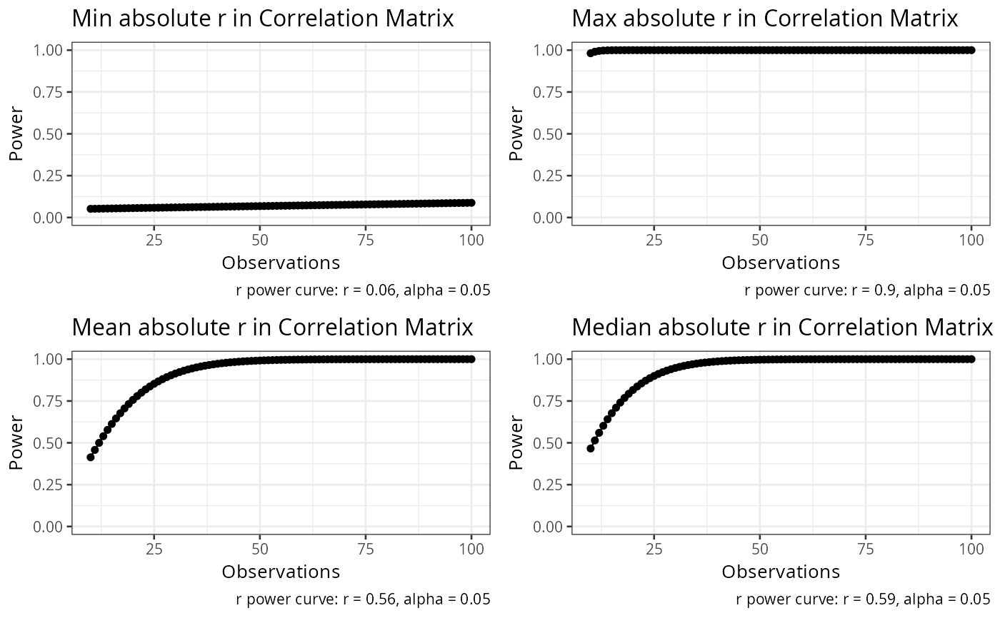

Compute correlation matrix
Examples
compute_power_r_matrix(m=stats::cor(mtcars,use="pairwise.complete.obs"),n=100)

#> $plot
#> $plot[[1]]
#>
#>
#> $power_table
#> n r p power alternative method
#> 1 10 0.05753435 0.05 0.05177153 two.sided approximate correlation power calculation (arctangh transformation)
#> 2 11 0.05753435 0.05 0.05218683 two.sided approximate correlation power calculation (arctangh transformation)
#> 3 12 0.05753435 0.05 0.05261579 two.sided approximate correlation power calculation (arctangh transformation)
#> 4 13 0.05753435 0.05 0.05304916 two.sided approximate correlation power calculation (arctangh transformation)
#> 5 14 0.05753435 0.05 0.05348263 two.sided approximate correlation power calculation (arctangh transformation)
#> 6 15 0.05753435 0.05 0.05391422 two.sided approximate correlation power calculation (arctangh transformation)
#> 7 16 0.05753435 0.05 0.05434310 two.sided approximate correlation power calculation (arctangh transformation)
#> 8 17 0.05753435 0.05 0.05476899 two.sided approximate correlation power calculation (arctangh transformation)
#> 9 18 0.05753435 0.05 0.05519192 two.sided approximate correlation power calculation (arctangh transformation)
#> 10 19 0.05753435 0.05 0.05561201 two.sided approximate correlation power calculation (arctangh transformation)
#> 11 20 0.05753435 0.05 0.05602949 two.sided approximate correlation power calculation (arctangh transformation)
#> 12 21 0.05753435 0.05 0.05644457 two.sided approximate correlation power calculation (arctangh transformation)
#> 13 22 0.05753435 0.05 0.05685748 two.sided approximate correlation power calculation (arctangh transformation)
#> 14 23 0.05753435 0.05 0.05726842 two.sided approximate correlation power calculation (arctangh transformation)
#> 15 24 0.05753435 0.05 0.05767760 two.sided approximate correlation power calculation (arctangh transformation)
#> 16 25 0.05753435 0.05 0.05808519 two.sided approximate correlation power calculation (arctangh transformation)
#> 17 26 0.05753435 0.05 0.05849134 two.sided approximate correlation power calculation (arctangh transformation)
#> 18 27 0.05753435 0.05 0.05889622 two.sided approximate correlation power calculation (arctangh transformation)
#> 19 28 0.05753435 0.05 0.05929993 two.sided approximate correlation power calculation (arctangh transformation)
#> 20 29 0.05753435 0.05 0.05970260 two.sided approximate correlation power calculation (arctangh transformation)
#> 21 30 0.05753435 0.05 0.06010434 two.sided approximate correlation power calculation (arctangh transformation)
#> 22 31 0.05753435 0.05 0.06050523 two.sided approximate correlation power calculation (arctangh transformation)
#> 23 32 0.05753435 0.05 0.06090536 two.sided approximate correlation power calculation (arctangh transformation)
#> 24 33 0.05753435 0.05 0.06130480 two.sided approximate correlation power calculation (arctangh transformation)
#> 25 34 0.05753435 0.05 0.06170362 two.sided approximate correlation power calculation (arctangh transformation)
#> 26 35 0.05753435 0.05 0.06210188 two.sided approximate correlation power calculation (arctangh transformation)
#> 27 36 0.05753435 0.05 0.06249963 two.sided approximate correlation power calculation (arctangh transformation)
#> 28 37 0.05753435 0.05 0.06289693 two.sided approximate correlation power calculation (arctangh transformation)
#> 29 38 0.05753435 0.05 0.06329381 two.sided approximate correlation power calculation (arctangh transformation)
#> 30 39 0.05753435 0.05 0.06369031 two.sided approximate correlation power calculation (arctangh transformation)
#> 31 40 0.05753435 0.05 0.06408648 two.sided approximate correlation power calculation (arctangh transformation)
#> 32 41 0.05753435 0.05 0.06448234 two.sided approximate correlation power calculation (arctangh transformation)
#> 33 42 0.05753435 0.05 0.06487793 two.sided approximate correlation power calculation (arctangh transformation)
#> 34 43 0.05753435 0.05 0.06527327 two.sided approximate correlation power calculation (arctangh transformation)
#> 35 44 0.05753435 0.05 0.06566839 two.sided approximate correlation power calculation (arctangh transformation)
#> 36 45 0.05753435 0.05 0.06606332 two.sided approximate correlation power calculation (arctangh transformation)
#> 37 46 0.05753435 0.05 0.06645806 two.sided approximate correlation power calculation (arctangh transformation)
#> 38 47 0.05753435 0.05 0.06685265 two.sided approximate correlation power calculation (arctangh transformation)
#> 39 48 0.05753435 0.05 0.06724709 two.sided approximate correlation power calculation (arctangh transformation)
#> 40 49 0.05753435 0.05 0.06764142 two.sided approximate correlation power calculation (arctangh transformation)
#> 41 50 0.05753435 0.05 0.06803563 two.sided approximate correlation power calculation (arctangh transformation)
#> 42 51 0.05753435 0.05 0.06842975 two.sided approximate correlation power calculation (arctangh transformation)
#> 43 52 0.05753435 0.05 0.06882379 two.sided approximate correlation power calculation (arctangh transformation)
#> 44 53 0.05753435 0.05 0.06921776 two.sided approximate correlation power calculation (arctangh transformation)
#> 45 54 0.05753435 0.05 0.06961167 two.sided approximate correlation power calculation (arctangh transformation)
#> 46 55 0.05753435 0.05 0.07000553 two.sided approximate correlation power calculation (arctangh transformation)
#> 47 56 0.05753435 0.05 0.07039935 two.sided approximate correlation power calculation (arctangh transformation)
#> 48 57 0.05753435 0.05 0.07079314 two.sided approximate correlation power calculation (arctangh transformation)
#> 49 58 0.05753435 0.05 0.07118691 two.sided approximate correlation power calculation (arctangh transformation)
#> 50 59 0.05753435 0.05 0.07158066 two.sided approximate correlation power calculation (arctangh transformation)
#> 51 60 0.05753435 0.05 0.07197441 two.sided approximate correlation power calculation (arctangh transformation)
#> 52 61 0.05753435 0.05 0.07236816 two.sided approximate correlation power calculation (arctangh transformation)
#> 53 62 0.05753435 0.05 0.07276191 two.sided approximate correlation power calculation (arctangh transformation)
#> 54 63 0.05753435 0.05 0.07315568 two.sided approximate correlation power calculation (arctangh transformation)
#> 55 64 0.05753435 0.05 0.07354946 two.sided approximate correlation power calculation (arctangh transformation)
#> 56 65 0.05753435 0.05 0.07394326 two.sided approximate correlation power calculation (arctangh transformation)
#> 57 66 0.05753435 0.05 0.07433709 two.sided approximate correlation power calculation (arctangh transformation)
#> 58 67 0.05753435 0.05 0.07473095 two.sided approximate correlation power calculation (arctangh transformation)
#> 59 68 0.05753435 0.05 0.07512485 two.sided approximate correlation power calculation (arctangh transformation)
#> 60 69 0.05753435 0.05 0.07551878 two.sided approximate correlation power calculation (arctangh transformation)
#> 61 70 0.05753435 0.05 0.07591276 two.sided approximate correlation power calculation (arctangh transformation)
#> 62 71 0.05753435 0.05 0.07630678 two.sided approximate correlation power calculation (arctangh transformation)
#> 63 72 0.05753435 0.05 0.07670085 two.sided approximate correlation power calculation (arctangh transformation)
#> 64 73 0.05753435 0.05 0.07709498 two.sided approximate correlation power calculation (arctangh transformation)
#> 65 74 0.05753435 0.05 0.07748915 two.sided approximate correlation power calculation (arctangh transformation)
#> 66 75 0.05753435 0.05 0.07788339 two.sided approximate correlation power calculation (arctangh transformation)
#> 67 76 0.05753435 0.05 0.07827769 two.sided approximate correlation power calculation (arctangh transformation)
#> 68 77 0.05753435 0.05 0.07867205 two.sided approximate correlation power calculation (arctangh transformation)
#> 69 78 0.05753435 0.05 0.07906647 two.sided approximate correlation power calculation (arctangh transformation)
#> 70 79 0.05753435 0.05 0.07946096 two.sided approximate correlation power calculation (arctangh transformation)
#> 71 80 0.05753435 0.05 0.07985552 two.sided approximate correlation power calculation (arctangh transformation)
#> 72 81 0.05753435 0.05 0.08025014 two.sided approximate correlation power calculation (arctangh transformation)
#> 73 82 0.05753435 0.05 0.08064484 two.sided approximate correlation power calculation (arctangh transformation)
#> 74 83 0.05753435 0.05 0.08103962 two.sided approximate correlation power calculation (arctangh transformation)
#> 75 84 0.05753435 0.05 0.08143446 two.sided approximate correlation power calculation (arctangh transformation)
#> 76 85 0.05753435 0.05 0.08182939 two.sided approximate correlation power calculation (arctangh transformation)
#> 77 86 0.05753435 0.05 0.08222439 two.sided approximate correlation power calculation (arctangh transformation)
#> 78 87 0.05753435 0.05 0.08261947 two.sided approximate correlation power calculation (arctangh transformation)
#> 79 88 0.05753435 0.05 0.08301463 two.sided approximate correlation power calculation (arctangh transformation)
#> 80 89 0.05753435 0.05 0.08340987 two.sided approximate correlation power calculation (arctangh transformation)
#> 81 90 0.05753435 0.05 0.08380519 two.sided approximate correlation power calculation (arctangh transformation)
#> 82 91 0.05753435 0.05 0.08420060 two.sided approximate correlation power calculation (arctangh transformation)
#> 83 92 0.05753435 0.05 0.08459609 two.sided approximate correlation power calculation (arctangh transformation)
#> 84 93 0.05753435 0.05 0.08499166 two.sided approximate correlation power calculation (arctangh transformation)
#> 85 94 0.05753435 0.05 0.08538732 two.sided approximate correlation power calculation (arctangh transformation)
#> 86 95 0.05753435 0.05 0.08578306 two.sided approximate correlation power calculation (arctangh transformation)
#> 87 96 0.05753435 0.05 0.08617890 two.sided approximate correlation power calculation (arctangh transformation)
#> 88 97 0.05753435 0.05 0.08657481 two.sided approximate correlation power calculation (arctangh transformation)
#> 89 98 0.05753435 0.05 0.08697082 two.sided approximate correlation power calculation (arctangh transformation)
#> 90 99 0.05753435 0.05 0.08736691 two.sided approximate correlation power calculation (arctangh transformation)
#> 91 100 0.05753435 0.05 0.08776310 two.sided approximate correlation power calculation (arctangh transformation)
#> 92 10 0.90203287 0.05 0.98152683 two.sided approximate correlation power calculation (arctangh transformation)
#> 93 11 0.90203287 0.05 0.99067648 two.sided approximate correlation power calculation (arctangh transformation)
#> 94 12 0.90203287 0.05 0.99537648 two.sided approximate correlation power calculation (arctangh transformation)
#> 95 13 0.90203287 0.05 0.99774233 two.sided approximate correlation power calculation (arctangh transformation)
#> 96 14 0.90203287 0.05 0.99891259 two.sided approximate correlation power calculation (arctangh transformation)
#> 97 15 0.90203287 0.05 0.99948264 two.sided approximate correlation power calculation (arctangh transformation)
#> 98 16 0.90203287 0.05 0.99975658 two.sided approximate correlation power calculation (arctangh transformation)
#> 99 17 0.90203287 0.05 0.99988662 two.sided approximate correlation power calculation (arctangh transformation)
#> 100 18 0.90203287 0.05 0.99994767 two.sided approximate correlation power calculation (arctangh transformation)
#> 101 19 0.90203287 0.05 0.99997605 two.sided approximate correlation power calculation (arctangh transformation)
#> 102 20 0.90203287 0.05 0.99998913 two.sided approximate correlation power calculation (arctangh transformation)
#> 103 21 0.90203287 0.05 0.99999510 two.sided approximate correlation power calculation (arctangh transformation)
#> 104 22 0.90203287 0.05 0.99999781 two.sided approximate correlation power calculation (arctangh transformation)
#> 105 23 0.90203287 0.05 0.99999902 two.sided approximate correlation power calculation (arctangh transformation)
#> 106 24 0.90203287 0.05 0.99999957 two.sided approximate correlation power calculation (arctangh transformation)
#> 107 25 0.90203287 0.05 0.99999981 two.sided approximate correlation power calculation (arctangh transformation)
#> 108 26 0.90203287 0.05 0.99999992 two.sided approximate correlation power calculation (arctangh transformation)
#> 109 27 0.90203287 0.05 0.99999996 two.sided approximate correlation power calculation (arctangh transformation)
#> 110 28 0.90203287 0.05 0.99999998 two.sided approximate correlation power calculation (arctangh transformation)
#> 111 29 0.90203287 0.05 0.99999999 two.sided approximate correlation power calculation (arctangh transformation)
#> 112 30 0.90203287 0.05 1.00000000 two.sided approximate correlation power calculation (arctangh transformation)
#> 113 31 0.90203287 0.05 1.00000000 two.sided approximate correlation power calculation (arctangh transformation)
#> 114 32 0.90203287 0.05 1.00000000 two.sided approximate correlation power calculation (arctangh transformation)
#> 115 33 0.90203287 0.05 1.00000000 two.sided approximate correlation power calculation (arctangh transformation)
#> 116 34 0.90203287 0.05 1.00000000 two.sided approximate correlation power calculation (arctangh transformation)
#> 117 35 0.90203287 0.05 1.00000000 two.sided approximate correlation power calculation (arctangh transformation)
#> 118 36 0.90203287 0.05 1.00000000 two.sided approximate correlation power calculation (arctangh transformation)
#> 119 37 0.90203287 0.05 1.00000000 two.sided approximate correlation power calculation (arctangh transformation)
#> 120 38 0.90203287 0.05 1.00000000 two.sided approximate correlation power calculation (arctangh transformation)
#> 121 39 0.90203287 0.05 1.00000000 two.sided approximate correlation power calculation (arctangh transformation)
#> 122 40 0.90203287 0.05 1.00000000 two.sided approximate correlation power calculation (arctangh transformation)
#> 123 41 0.90203287 0.05 1.00000000 two.sided approximate correlation power calculation (arctangh transformation)
#> 124 42 0.90203287 0.05 1.00000000 two.sided approximate correlation power calculation (arctangh transformation)
#> 125 43 0.90203287 0.05 1.00000000 two.sided approximate correlation power calculation (arctangh transformation)
#> 126 44 0.90203287 0.05 1.00000000 two.sided approximate correlation power calculation (arctangh transformation)
#> 127 45 0.90203287 0.05 1.00000000 two.sided approximate correlation power calculation (arctangh transformation)
#> 128 46 0.90203287 0.05 1.00000000 two.sided approximate correlation power calculation (arctangh transformation)
#> 129 47 0.90203287 0.05 1.00000000 two.sided approximate correlation power calculation (arctangh transformation)
#> 130 48 0.90203287 0.05 1.00000000 two.sided approximate correlation power calculation (arctangh transformation)
#> 131 49 0.90203287 0.05 1.00000000 two.sided approximate correlation power calculation (arctangh transformation)
#> 132 50 0.90203287 0.05 1.00000000 two.sided approximate correlation power calculation (arctangh transformation)
#> 133 51 0.90203287 0.05 1.00000000 two.sided approximate correlation power calculation (arctangh transformation)
#> 134 52 0.90203287 0.05 1.00000000 two.sided approximate correlation power calculation (arctangh transformation)
#> 135 53 0.90203287 0.05 1.00000000 two.sided approximate correlation power calculation (arctangh transformation)
#> 136 54 0.90203287 0.05 1.00000000 two.sided approximate correlation power calculation (arctangh transformation)
#> 137 55 0.90203287 0.05 1.00000000 two.sided approximate correlation power calculation (arctangh transformation)
#> 138 56 0.90203287 0.05 1.00000000 two.sided approximate correlation power calculation (arctangh transformation)
#> 139 57 0.90203287 0.05 1.00000000 two.sided approximate correlation power calculation (arctangh transformation)
#> 140 58 0.90203287 0.05 1.00000000 two.sided approximate correlation power calculation (arctangh transformation)
#> 141 59 0.90203287 0.05 1.00000000 two.sided approximate correlation power calculation (arctangh transformation)
#> 142 60 0.90203287 0.05 1.00000000 two.sided approximate correlation power calculation (arctangh transformation)
#> 143 61 0.90203287 0.05 1.00000000 two.sided approximate correlation power calculation (arctangh transformation)
#> 144 62 0.90203287 0.05 1.00000000 two.sided approximate correlation power calculation (arctangh transformation)
#> 145 63 0.90203287 0.05 1.00000000 two.sided approximate correlation power calculation (arctangh transformation)
#> 146 64 0.90203287 0.05 1.00000000 two.sided approximate correlation power calculation (arctangh transformation)
#> 147 65 0.90203287 0.05 1.00000000 two.sided approximate correlation power calculation (arctangh transformation)
#> 148 66 0.90203287 0.05 1.00000000 two.sided approximate correlation power calculation (arctangh transformation)
#> 149 67 0.90203287 0.05 1.00000000 two.sided approximate correlation power calculation (arctangh transformation)
#> 150 68 0.90203287 0.05 1.00000000 two.sided approximate correlation power calculation (arctangh transformation)
#> 151 69 0.90203287 0.05 1.00000000 two.sided approximate correlation power calculation (arctangh transformation)
#> 152 70 0.90203287 0.05 1.00000000 two.sided approximate correlation power calculation (arctangh transformation)
#> 153 71 0.90203287 0.05 1.00000000 two.sided approximate correlation power calculation (arctangh transformation)
#> 154 72 0.90203287 0.05 1.00000000 two.sided approximate correlation power calculation (arctangh transformation)
#> 155 73 0.90203287 0.05 1.00000000 two.sided approximate correlation power calculation (arctangh transformation)
#> 156 74 0.90203287 0.05 1.00000000 two.sided approximate correlation power calculation (arctangh transformation)
#> 157 75 0.90203287 0.05 1.00000000 two.sided approximate correlation power calculation (arctangh transformation)
#> 158 76 0.90203287 0.05 1.00000000 two.sided approximate correlation power calculation (arctangh transformation)
#> 159 77 0.90203287 0.05 1.00000000 two.sided approximate correlation power calculation (arctangh transformation)
#> 160 78 0.90203287 0.05 1.00000000 two.sided approximate correlation power calculation (arctangh transformation)
#> 161 79 0.90203287 0.05 1.00000000 two.sided approximate correlation power calculation (arctangh transformation)
#> 162 80 0.90203287 0.05 1.00000000 two.sided approximate correlation power calculation (arctangh transformation)
#> 163 81 0.90203287 0.05 1.00000000 two.sided approximate correlation power calculation (arctangh transformation)
#> 164 82 0.90203287 0.05 1.00000000 two.sided approximate correlation power calculation (arctangh transformation)
#> 165 83 0.90203287 0.05 1.00000000 two.sided approximate correlation power calculation (arctangh transformation)
#> 166 84 0.90203287 0.05 1.00000000 two.sided approximate correlation power calculation (arctangh transformation)
#> 167 85 0.90203287 0.05 1.00000000 two.sided approximate correlation power calculation (arctangh transformation)
#> 168 86 0.90203287 0.05 1.00000000 two.sided approximate correlation power calculation (arctangh transformation)
#> 169 87 0.90203287 0.05 1.00000000 two.sided approximate correlation power calculation (arctangh transformation)
#> 170 88 0.90203287 0.05 1.00000000 two.sided approximate correlation power calculation (arctangh transformation)
#> 171 89 0.90203287 0.05 1.00000000 two.sided approximate correlation power calculation (arctangh transformation)
#> 172 90 0.90203287 0.05 1.00000000 two.sided approximate correlation power calculation (arctangh transformation)
#> 173 91 0.90203287 0.05 1.00000000 two.sided approximate correlation power calculation (arctangh transformation)
#> 174 92 0.90203287 0.05 1.00000000 two.sided approximate correlation power calculation (arctangh transformation)
#> 175 93 0.90203287 0.05 1.00000000 two.sided approximate correlation power calculation (arctangh transformation)
#> 176 94 0.90203287 0.05 1.00000000 two.sided approximate correlation power calculation (arctangh transformation)
#> 177 95 0.90203287 0.05 1.00000000 two.sided approximate correlation power calculation (arctangh transformation)
#> 178 96 0.90203287 0.05 1.00000000 two.sided approximate correlation power calculation (arctangh transformation)
#> 179 97 0.90203287 0.05 1.00000000 two.sided approximate correlation power calculation (arctangh transformation)
#> 180 98 0.90203287 0.05 1.00000000 two.sided approximate correlation power calculation (arctangh transformation)
#> 181 99 0.90203287 0.05 1.00000000 two.sided approximate correlation power calculation (arctangh transformation)
#> 182 100 0.90203287 0.05 1.00000000 two.sided approximate correlation power calculation (arctangh transformation)
#> 183 10 0.55864236 0.05 0.41352700 two.sided approximate correlation power calculation (arctangh transformation)
#> 184 11 0.55864236 0.05 0.45772015 two.sided approximate correlation power calculation (arctangh transformation)
#> 185 12 0.55864236 0.05 0.49982546 two.sided approximate correlation power calculation (arctangh transformation)
#> 186 13 0.55864236 0.05 0.53973112 two.sided approximate correlation power calculation (arctangh transformation)
#> 187 14 0.55864236 0.05 0.57737671 two.sided approximate correlation power calculation (arctangh transformation)
#> 188 15 0.55864236 0.05 0.61274225 two.sided approximate correlation power calculation (arctangh transformation)
#> 189 16 0.55864236 0.05 0.64584000 two.sided approximate correlation power calculation (arctangh transformation)
#> 190 17 0.55864236 0.05 0.67670794 two.sided approximate correlation power calculation (arctangh transformation)
#> 191 18 0.55864236 0.05 0.70540428 two.sided approximate correlation power calculation (arctangh transformation)
#> 192 19 0.55864236 0.05 0.73200283 two.sided approximate correlation power calculation (arctangh transformation)
#> 193 20 0.55864236 0.05 0.75658911 two.sided approximate correlation power calculation (arctangh transformation)
#> 194 21 0.55864236 0.05 0.77925697 two.sided approximate correlation power calculation (arctangh transformation)
#> 195 22 0.55864236 0.05 0.80010586 two.sided approximate correlation power calculation (arctangh transformation)
#> 196 23 0.55864236 0.05 0.81923846 two.sided approximate correlation power calculation (arctangh transformation)
#> 197 24 0.55864236 0.05 0.83675874 two.sided approximate correlation power calculation (arctangh transformation)
#> 198 25 0.55864236 0.05 0.85277040 two.sided approximate correlation power calculation (arctangh transformation)
#> 199 26 0.55864236 0.05 0.86737560 two.sided approximate correlation power calculation (arctangh transformation)
#> 200 27 0.55864236 0.05 0.88067392 two.sided approximate correlation power calculation (arctangh transformation)
#> 201 28 0.55864236 0.05 0.89276166 two.sided approximate correlation power calculation (arctangh transformation)
#> 202 29 0.55864236 0.05 0.90373119 two.sided approximate correlation power calculation (arctangh transformation)
#> 203 30 0.55864236 0.05 0.91367054 two.sided approximate correlation power calculation (arctangh transformation)
#> 204 31 0.55864236 0.05 0.92266320 two.sided approximate correlation power calculation (arctangh transformation)
#> 205 32 0.55864236 0.05 0.93078784 two.sided approximate correlation power calculation (arctangh transformation)
#> 206 33 0.55864236 0.05 0.93811836 two.sided approximate correlation power calculation (arctangh transformation)
#> 207 34 0.55864236 0.05 0.94472383 two.sided approximate correlation power calculation (arctangh transformation)
#> 208 35 0.55864236 0.05 0.95066858 two.sided approximate correlation power calculation (arctangh transformation)
#> 209 36 0.55864236 0.05 0.95601233 two.sided approximate correlation power calculation (arctangh transformation)
#> 210 37 0.55864236 0.05 0.96081033 two.sided approximate correlation power calculation (arctangh transformation)
#> 211 38 0.55864236 0.05 0.96511359 two.sided approximate correlation power calculation (arctangh transformation)
#> 212 39 0.55864236 0.05 0.96896901 two.sided approximate correlation power calculation (arctangh transformation)
#> 213 40 0.55864236 0.05 0.97241967 two.sided approximate correlation power calculation (arctangh transformation)
#> 214 41 0.55864236 0.05 0.97550502 two.sided approximate correlation power calculation (arctangh transformation)
#> 215 42 0.55864236 0.05 0.97826109 two.sided approximate correlation power calculation (arctangh transformation)
#> 216 43 0.55864236 0.05 0.98072075 two.sided approximate correlation power calculation (arctangh transformation)
#> 217 44 0.55864236 0.05 0.98291393 two.sided approximate correlation power calculation (arctangh transformation)
#> 218 45 0.55864236 0.05 0.98486780 two.sided approximate correlation power calculation (arctangh transformation)
#> 219 46 0.55864236 0.05 0.98660702 two.sided approximate correlation power calculation (arctangh transformation)
#> 220 47 0.55864236 0.05 0.98815392 two.sided approximate correlation power calculation (arctangh transformation)
#> 221 48 0.55864236 0.05 0.98952868 two.sided approximate correlation power calculation (arctangh transformation)
#> 222 49 0.55864236 0.05 0.99074952 two.sided approximate correlation power calculation (arctangh transformation)
#> 223 50 0.55864236 0.05 0.99183287 two.sided approximate correlation power calculation (arctangh transformation)
#> 224 51 0.55864236 0.05 0.99279352 two.sided approximate correlation power calculation (arctangh transformation)
#> 225 52 0.55864236 0.05 0.99364478 two.sided approximate correlation power calculation (arctangh transformation)
#> 226 53 0.55864236 0.05 0.99439857 two.sided approximate correlation power calculation (arctangh transformation)
#> 227 54 0.55864236 0.05 0.99506562 two.sided approximate correlation power calculation (arctangh transformation)
#> 228 55 0.55864236 0.05 0.99565554 two.sided approximate correlation power calculation (arctangh transformation)
#> 229 56 0.55864236 0.05 0.99617690 two.sided approximate correlation power calculation (arctangh transformation)
#> 230 57 0.55864236 0.05 0.99663739 two.sided approximate correlation power calculation (arctangh transformation)
#> 231 58 0.55864236 0.05 0.99704388 two.sided approximate correlation power calculation (arctangh transformation)
#> 232 59 0.55864236 0.05 0.99740249 two.sided approximate correlation power calculation (arctangh transformation)
#> 233 60 0.55864236 0.05 0.99771868 two.sided approximate correlation power calculation (arctangh transformation)
#> 234 61 0.55864236 0.05 0.99799731 two.sided approximate correlation power calculation (arctangh transformation)
#> 235 62 0.55864236 0.05 0.99824270 two.sided approximate correlation power calculation (arctangh transformation)
#> 236 63 0.55864236 0.05 0.99845872 two.sided approximate correlation power calculation (arctangh transformation)
#> 237 64 0.55864236 0.05 0.99864877 two.sided approximate correlation power calculation (arctangh transformation)
#> 238 65 0.55864236 0.05 0.99881590 two.sided approximate correlation power calculation (arctangh transformation)
#> 239 66 0.55864236 0.05 0.99896279 two.sided approximate correlation power calculation (arctangh transformation)
#> 240 67 0.55864236 0.05 0.99909183 two.sided approximate correlation power calculation (arctangh transformation)
#> 241 68 0.55864236 0.05 0.99920514 two.sided approximate correlation power calculation (arctangh transformation)
#> 242 69 0.55864236 0.05 0.99930459 two.sided approximate correlation power calculation (arctangh transformation)
#> 243 70 0.55864236 0.05 0.99939184 two.sided approximate correlation power calculation (arctangh transformation)
#> 244 71 0.55864236 0.05 0.99946834 two.sided approximate correlation power calculation (arctangh transformation)
#> 245 72 0.55864236 0.05 0.99953539 two.sided approximate correlation power calculation (arctangh transformation)
#> 246 73 0.55864236 0.05 0.99959414 two.sided approximate correlation power calculation (arctangh transformation)
#> 247 74 0.55864236 0.05 0.99964558 two.sided approximate correlation power calculation (arctangh transformation)
#> 248 75 0.55864236 0.05 0.99969062 two.sided approximate correlation power calculation (arctangh transformation)
#> 249 76 0.55864236 0.05 0.99973003 two.sided approximate correlation power calculation (arctangh transformation)
#> 250 77 0.55864236 0.05 0.99976450 two.sided approximate correlation power calculation (arctangh transformation)
#> 251 78 0.55864236 0.05 0.99979464 two.sided approximate correlation power calculation (arctangh transformation)
#> 252 79 0.55864236 0.05 0.99982098 two.sided approximate correlation power calculation (arctangh transformation)
#> 253 80 0.55864236 0.05 0.99984399 two.sided approximate correlation power calculation (arctangh transformation)
#> 254 81 0.55864236 0.05 0.99986409 two.sided approximate correlation power calculation (arctangh transformation)
#> 255 82 0.55864236 0.05 0.99988164 two.sided approximate correlation power calculation (arctangh transformation)
#> 256 83 0.55864236 0.05 0.99989695 two.sided approximate correlation power calculation (arctangh transformation)
#> 257 84 0.55864236 0.05 0.99991031 two.sided approximate correlation power calculation (arctangh transformation)
#> 258 85 0.55864236 0.05 0.99992196 two.sided approximate correlation power calculation (arctangh transformation)
#> 259 86 0.55864236 0.05 0.99993212 two.sided approximate correlation power calculation (arctangh transformation)
#> 260 87 0.55864236 0.05 0.99994098 two.sided approximate correlation power calculation (arctangh transformation)
#> 261 88 0.55864236 0.05 0.99994869 two.sided approximate correlation power calculation (arctangh transformation)
#> 262 89 0.55864236 0.05 0.99995541 two.sided approximate correlation power calculation (arctangh transformation)
#> 263 90 0.55864236 0.05 0.99996126 two.sided approximate correlation power calculation (arctangh transformation)
#> 264 91 0.55864236 0.05 0.99996635 two.sided approximate correlation power calculation (arctangh transformation)
#> 265 92 0.55864236 0.05 0.99997078 two.sided approximate correlation power calculation (arctangh transformation)
#> 266 93 0.55864236 0.05 0.99997463 two.sided approximate correlation power calculation (arctangh transformation)
#> 267 94 0.55864236 0.05 0.99997798 two.sided approximate correlation power calculation (arctangh transformation)
#> 268 95 0.55864236 0.05 0.99998090 two.sided approximate correlation power calculation (arctangh transformation)
#> 269 96 0.55864236 0.05 0.99998343 two.sided approximate correlation power calculation (arctangh transformation)
#> 270 97 0.55864236 0.05 0.99998563 two.sided approximate correlation power calculation (arctangh transformation)
#> 271 98 0.55864236 0.05 0.99998754 two.sided approximate correlation power calculation (arctangh transformation)
#> 272 99 0.55864236 0.05 0.99998920 two.sided approximate correlation power calculation (arctangh transformation)
#> 273 100 0.55864236 0.05 0.99999064 two.sided approximate correlation power calculation (arctangh transformation)
#> 274 10 0.59124207 0.05 0.46616725 two.sided approximate correlation power calculation (arctangh transformation)
#> 275 11 0.59124207 0.05 0.51441850 two.sided approximate correlation power calculation (arctangh transformation)
#> 276 12 0.59124207 0.05 0.55966036 two.sided approximate correlation power calculation (arctangh transformation)
#> 277 13 0.59124207 0.05 0.60182458 two.sided approximate correlation power calculation (arctangh transformation)
#> 278 14 0.59124207 0.05 0.64091124 two.sided approximate correlation power calculation (arctangh transformation)
#> 279 15 0.59124207 0.05 0.67697193 two.sided approximate correlation power calculation (arctangh transformation)
#> 280 16 0.59124207 0.05 0.71009699 two.sided approximate correlation power calculation (arctangh transformation)
#> 281 17 0.59124207 0.05 0.74040516 two.sided approximate correlation power calculation (arctangh transformation)
#> 282 18 0.59124207 0.05 0.76803533 two.sided approximate correlation power calculation (arctangh transformation)
#> 283 19 0.59124207 0.05 0.79313967 two.sided approximate correlation power calculation (arctangh transformation)
#> 284 20 0.59124207 0.05 0.81587813 two.sided approximate correlation power calculation (arctangh transformation)
#> 285 21 0.59124207 0.05 0.83641404 two.sided approximate correlation power calculation (arctangh transformation)
#> 286 22 0.59124207 0.05 0.85491056 two.sided approximate correlation power calculation (arctangh transformation)
#> 287 23 0.59124207 0.05 0.87152796 two.sided approximate correlation power calculation (arctangh transformation)
#> 288 24 0.59124207 0.05 0.88642158 two.sided approximate correlation power calculation (arctangh transformation)
#> 289 25 0.59124207 0.05 0.89974024 two.sided approximate correlation power calculation (arctangh transformation)
#> 290 26 0.59124207 0.05 0.91162523 two.sided approximate correlation power calculation (arctangh transformation)
#> 291 27 0.59124207 0.05 0.92220958 two.sided approximate correlation power calculation (arctangh transformation)
#> 292 28 0.59124207 0.05 0.93161769 two.sided approximate correlation power calculation (arctangh transformation)
#> 293 29 0.59124207 0.05 0.93996514 two.sided approximate correlation power calculation (arctangh transformation)
#> 294 30 0.59124207 0.05 0.94735875 two.sided approximate correlation power calculation (arctangh transformation)
#> 295 31 0.59124207 0.05 0.95389678 two.sided approximate correlation power calculation (arctangh transformation)
#> 296 32 0.59124207 0.05 0.95966916 two.sided approximate correlation power calculation (arctangh transformation)
#> 297 33 0.59124207 0.05 0.96475793 two.sided approximate correlation power calculation (arctangh transformation)
#> 298 34 0.59124207 0.05 0.96923761 two.sided approximate correlation power calculation (arctangh transformation)
#> 299 35 0.59124207 0.05 0.97317567 two.sided approximate correlation power calculation (arctangh transformation)
#> 300 36 0.59124207 0.05 0.97663304 two.sided approximate correlation power calculation (arctangh transformation)
#> 301 37 0.59124207 0.05 0.97966453 two.sided approximate correlation power calculation (arctangh transformation)
#> 302 38 0.59124207 0.05 0.98231937 two.sided approximate correlation power calculation (arctangh transformation)
#> 303 39 0.59124207 0.05 0.98464162 two.sided approximate correlation power calculation (arctangh transformation)
#> 304 40 0.59124207 0.05 0.98667065 two.sided approximate correlation power calculation (arctangh transformation)
#> 305 41 0.59124207 0.05 0.98844155 two.sided approximate correlation power calculation (arctangh transformation)
#> 306 42 0.59124207 0.05 0.98998552 two.sided approximate correlation power calculation (arctangh transformation)
#> 307 43 0.59124207 0.05 0.99133027 two.sided approximate correlation power calculation (arctangh transformation)
#> 308 44 0.59124207 0.05 0.99250037 two.sided approximate correlation power calculation (arctangh transformation)
#> 309 45 0.59124207 0.05 0.99351751 two.sided approximate correlation power calculation (arctangh transformation)
#> 310 46 0.59124207 0.05 0.99440088 two.sided approximate correlation power calculation (arctangh transformation)
#> 311 47 0.59124207 0.05 0.99516738 two.sided approximate correlation power calculation (arctangh transformation)
#> 312 48 0.59124207 0.05 0.99583190 two.sided approximate correlation power calculation (arctangh transformation)
#> 313 49 0.59124207 0.05 0.99640752 two.sided approximate correlation power calculation (arctangh transformation)
#> 314 50 0.59124207 0.05 0.99690573 two.sided approximate correlation power calculation (arctangh transformation)
#> 315 51 0.59124207 0.05 0.99733660 two.sided approximate correlation power calculation (arctangh transformation)
#> 316 52 0.59124207 0.05 0.99770893 two.sided approximate correlation power calculation (arctangh transformation)
#> 317 53 0.59124207 0.05 0.99803045 two.sided approximate correlation power calculation (arctangh transformation)
#> 318 54 0.59124207 0.05 0.99830788 two.sided approximate correlation power calculation (arctangh transformation)
#> 319 55 0.59124207 0.05 0.99854709 two.sided approximate correlation power calculation (arctangh transformation)
#> 320 56 0.59124207 0.05 0.99875322 two.sided approximate correlation power calculation (arctangh transformation)
#> 321 57 0.59124207 0.05 0.99893071 two.sided approximate correlation power calculation (arctangh transformation)
#> 322 58 0.59124207 0.05 0.99908345 two.sided approximate correlation power calculation (arctangh transformation)
#> 323 59 0.59124207 0.05 0.99921479 two.sided approximate correlation power calculation (arctangh transformation)
#> 324 60 0.59124207 0.05 0.99932767 two.sided approximate correlation power calculation (arctangh transformation)
#> 325 61 0.59124207 0.05 0.99942463 two.sided approximate correlation power calculation (arctangh transformation)
#> 326 62 0.59124207 0.05 0.99950785 two.sided approximate correlation power calculation (arctangh transformation)
#> 327 63 0.59124207 0.05 0.99957925 two.sided approximate correlation power calculation (arctangh transformation)
#> 328 64 0.59124207 0.05 0.99964047 two.sided approximate correlation power calculation (arctangh transformation)
#> 329 65 0.59124207 0.05 0.99969293 two.sided approximate correlation power calculation (arctangh transformation)
#> 330 66 0.59124207 0.05 0.99973785 two.sided approximate correlation power calculation (arctangh transformation)
#> 331 67 0.59124207 0.05 0.99977631 two.sided approximate correlation power calculation (arctangh transformation)
#> 332 68 0.59124207 0.05 0.99980921 two.sided approximate correlation power calculation (arctangh transformation)
#> 333 69 0.59124207 0.05 0.99983735 two.sided approximate correlation power calculation (arctangh transformation)
#> 334 70 0.59124207 0.05 0.99986139 two.sided approximate correlation power calculation (arctangh transformation)
#> 335 71 0.59124207 0.05 0.99988194 two.sided approximate correlation power calculation (arctangh transformation)
#> 336 72 0.59124207 0.05 0.99989948 two.sided approximate correlation power calculation (arctangh transformation)
#> 337 73 0.59124207 0.05 0.99991445 two.sided approximate correlation power calculation (arctangh transformation)
#> 338 74 0.59124207 0.05 0.99992722 two.sided approximate correlation power calculation (arctangh transformation)
#> 339 75 0.59124207 0.05 0.99993810 two.sided approximate correlation power calculation (arctangh transformation)
#> 340 76 0.59124207 0.05 0.99994738 two.sided approximate correlation power calculation (arctangh transformation)
#> 341 77 0.59124207 0.05 0.99995529 two.sided approximate correlation power calculation (arctangh transformation)
#> 342 78 0.59124207 0.05 0.99996202 two.sided approximate correlation power calculation (arctangh transformation)
#> 343 79 0.59124207 0.05 0.99996775 two.sided approximate correlation power calculation (arctangh transformation)
#> 344 80 0.59124207 0.05 0.99997263 two.sided approximate correlation power calculation (arctangh transformation)
#> 345 81 0.59124207 0.05 0.99997678 two.sided approximate correlation power calculation (arctangh transformation)
#> 346 82 0.59124207 0.05 0.99998030 two.sided approximate correlation power calculation (arctangh transformation)
#> 347 83 0.59124207 0.05 0.99998330 two.sided approximate correlation power calculation (arctangh transformation)
#> 348 84 0.59124207 0.05 0.99998584 two.sided approximate correlation power calculation (arctangh transformation)
#> 349 85 0.59124207 0.05 0.99998801 two.sided approximate correlation power calculation (arctangh transformation)
#> 350 86 0.59124207 0.05 0.99998984 two.sided approximate correlation power calculation (arctangh transformation)
#> 351 87 0.59124207 0.05 0.99999140 two.sided approximate correlation power calculation (arctangh transformation)
#> 352 88 0.59124207 0.05 0.99999272 two.sided approximate correlation power calculation (arctangh transformation)
#> 353 89 0.59124207 0.05 0.99999384 two.sided approximate correlation power calculation (arctangh transformation)
#> 354 90 0.59124207 0.05 0.99999479 two.sided approximate correlation power calculation (arctangh transformation)
#> 355 91 0.59124207 0.05 0.99999559 two.sided approximate correlation power calculation (arctangh transformation)
#> 356 92 0.59124207 0.05 0.99999627 two.sided approximate correlation power calculation (arctangh transformation)
#> 357 93 0.59124207 0.05 0.99999685 two.sided approximate correlation power calculation (arctangh transformation)
#> 358 94 0.59124207 0.05 0.99999734 two.sided approximate correlation power calculation (arctangh transformation)
#> 359 95 0.59124207 0.05 0.99999775 two.sided approximate correlation power calculation (arctangh transformation)
#> 360 96 0.59124207 0.05 0.99999810 two.sided approximate correlation power calculation (arctangh transformation)
#> 361 97 0.59124207 0.05 0.99999840 two.sided approximate correlation power calculation (arctangh transformation)
#> 362 98 0.59124207 0.05 0.99999865 two.sided approximate correlation power calculation (arctangh transformation)
#> 363 99 0.59124207 0.05 0.99999886 two.sided approximate correlation power calculation (arctangh transformation)
#> 364 100 0.59124207 0.05 0.99999904 two.sided approximate correlation power calculation (arctangh transformation)
#>